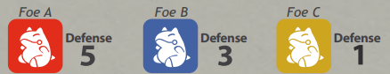
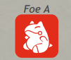
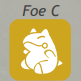

我們已經看過了以單體為目標的招式。
然而就如同我們知道的一樣，場上可能有複數的參戰者，所以戰鬥開始後你可以擁有非常多的目標選項。
- 紅色圖示都是以敵方為目標而綠色圖示都是以友方為目標：
- 單體敵人
以一個角色為目標。通常是敵人
隨機敵人
如果敵方多於 1 人，隨機選擇一個敵人為目標
所有範圍內的敵人
選擇你的階級允許的任意數量的目標
使用者
以使用者為目標的招式
單體隊友
選擇一個友方的隊友
使用者和範圍內的隊友
選擇你的階級允許的包含使用者和任意數量的隊友
範圍招式
沒有特定目標，範圍內的全部人都會被影響，包括隊友
戰鬥場地
選擇戰鬥場地為目標，包括友方的和敵方的
友方戰鬥場地
僅選擇友方場地為目標
敵方戰鬥場地
僅選擇敵方場地為目標
選擇目標非常重要，因為某些目標可能會讓某些反應例如閃避和對抗失效。
可以選擇不同目標的招式能讓你的戰術更深入，並賦予你靈活性來迅速應對不同情況。
我可以用一個以敵方為目標的招式來指定我方隊友嗎？
可以。這種情況非常罕見，然而有時候這麼做會為你帶來收益。例如你對擁有蓄電特性的隊友使用電系招式。
我可以用一個以隊友或者敵方為目標的招式來指定使用者自己嗎？
不行。大部分以隊友或者敵方為目標的招式不可能使用在使用者身上，例如「您先請」或「幫助」，這類招式只能用來輔助隊友。如果你想讓寶可夢自己攻擊自己，寶可夢可不會乖乖配合你。
敵人正在使用以使用者或其隊友為目標的招式，我可以閃避/對抗或者以任意方式取消該招式嗎？
不行，你只可以閃避或者對抗以你為目標的招式。如果敵人只是專注於自己或同伴，除了少數特定招式外，你能做的不多。
有個招式正在以戰鬥場地為目標，我可以閃避/對抗或者以任意方式取消該招式嗎？
以戰鬥場地為目標的招式無法被對抗和閃避。然而某些招式和特性可以讓友方戰場不受影響甚至反彈效果至敵方戰場。
我使用了範圍招式，我會命中我的隊友嗎？
範圍招式沒有特定目標而是會影響你的階級所允許的最高數量的參戰者。
如果你的階級允許你以最多 4 隻寶可夢為目標並且場上只有 2 位敵人，你的隊友也會被這招牽涉其中。範圍招式優先以敵人為目標，所以並沒有想像中那麼糟糕。但是你必須要想出一個策略以讓你的隊伍能夠適應這種招式。
我可以對抗隊友使用的並且會命中我的範圍招式嗎？
範圍招式只可以被範圍招式對抗。如果你有範圍招式，你就可以對抗。你的隊友可能會因為受傷而對你有意見，然而……是他先開始的，對吧？
我要如何選擇用隨機目標的招式擊中的敵人呢？
擲骰子、丟硬幣、抽籤都行。在說書人的決定之下你可以使用任意你喜歡的方式來決定。
我們會在後續章節學到目標和一些無屬性戰技之間的關係。
複數目標的招式#
你的階級會決定範圍招式和選擇複數目標的招式所可以影響的數量。
對於以使用者和範圍內的隊友為目標的招式，使用者也算作一個目標。
如果你使用的不是範圍招式，你可以選擇攻擊低於你最大數量的目標。
範圍招式會盡可能影響範圍內的所有人。
| 階級 | 目標上限 |
|---|---|
| 啟程級 | 1 |
| 新手級 | 2 |
| 標準級 | 3 |
| 進階級 | 4 |
| 專家級 | 5 |
| 王牌級 | 6 |
| 大師級 | 8 |
| 冠軍級 | 10 |
複數目標的招式只需要擲 1 次命中骰。
然而，傷害雖然本質上依舊相同，但在擲骰方式上需要稍作調整以便對所有目標公平地造成傷害。
複數目標的傷害#
當你使用一個招式對複數目標造成傷害時，傷害的方程式依然沒有改變。
然而，傷害將會根據防禦/特防的高到低來依序計算，保留你的骰子結果以確保全部目標公平地受到傷害。
要對一個有複數目標的招式進行傷害擲骰時，你必須先骰最高防禦/特防的傷害，然後依序往下擲，直到最低防禦/特防的目標為止。
如果你的寶可夢成功命中 3 個目標，而你的寶可夢的基礎傷害骰池是 6 顆骰子。那麼你必須根據敵人的防禦/特防來決定最終傷害骰池。
然而，全部目標擁有不同防禦：

你是否需要為每個目標分別進行不同的擲骰？
是，也不是
首先你對最高防禦的目標進行擲骰
6 - 5 = 4
基礎骰池 - 敵人A的防禦 = 傷害骰

敵人A受到 1 點傷害！保留結果，並對下一位最高防禦的擲骰
6 - 3 = 4 5 2
基礎骰池 - 敵人B的防禦 = 傷害骰
敵人B受到 2 點傷害！
然後輪到最低防禦的目標
6 - 1 = 4 5 2 6 3
基礎骰池 - 敵人C的防禦 = 傷害骰

敵人C受到 3 點傷害！全部目標都被同一個攻擊擊中，但是防禦讓他們受到的傷害不一樣。
這就是計算的方法。